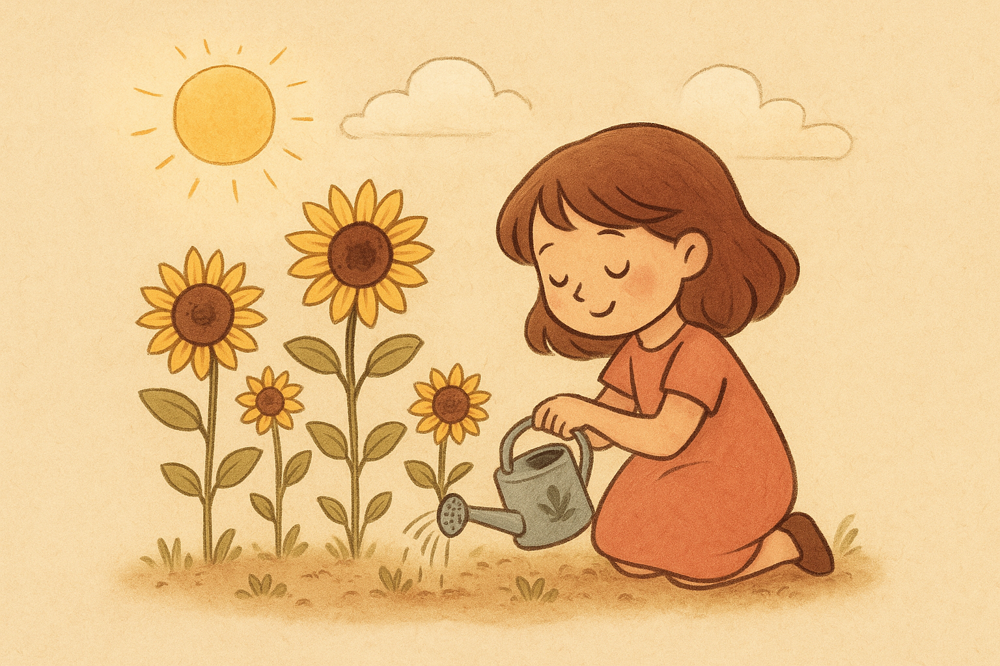

Uma menina encontrou um jardim cheio de flores quase secas. Em vez de ir embora, decidiu regá-las todos os dias. Pouco a pouco, as flores voltaram a sorrir para o sol. Ela então percebeu que cuidar do que parece pequeno pode transformar o mundo inteiro ao seu redor.
A menina que rega o jardim representa a atitude ativa frente ao esquecimento e à negligência: em vez de abandonar o que parece perdido, ela assume a responsabilidade e exerce cuidado constante. O jardim seco funciona como metáfora do mundo interior — sonhos, relações e projetos — que, sem atenção, murcham; a ação repetida da menina mostra que transformação exige presença, rotina e pequenas decisões que se acumulam. Esse cuidado modesto mas persistente revela uma ética prática: a bondade não é um gesto grandioso isolado, mas uma prática diária que reconstrói ambientes e vínculos.
A história também fala sobre tempo e valor oculto. O “pouco a pouco” indica que resultados significativos tendem a emergir gradualmente; a paciência é parte da sabedoria. Além disso, há ali uma mensagem estética e política: reconhecer valor em coisas pequenas é contrariar a lógica do descartável e do imediatismo — ao regar uma flor, a menina propõe um modo de vida que preserva, repara e gera beleza compartilhada. Em resumo, cuidar do aparentemente insignificante é um ato transformador que amplia o sentido de mundo e de comunidade.